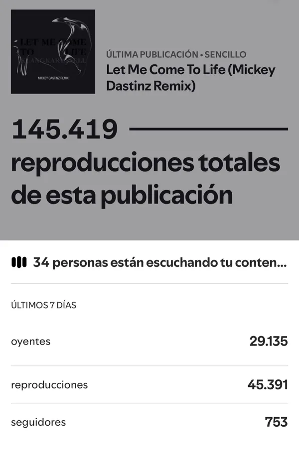
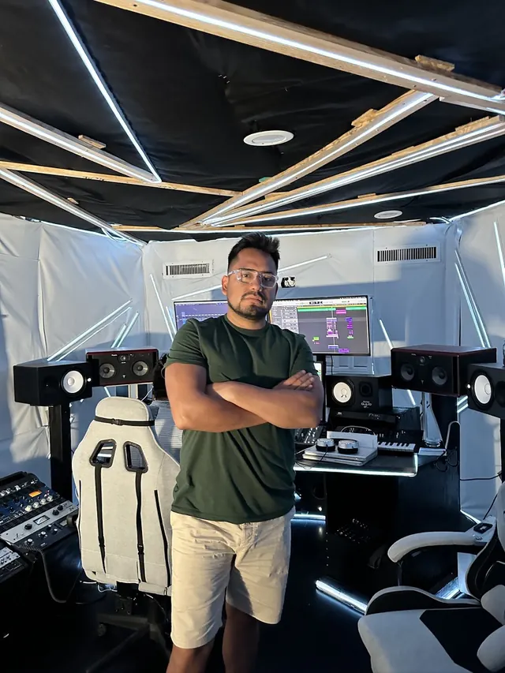
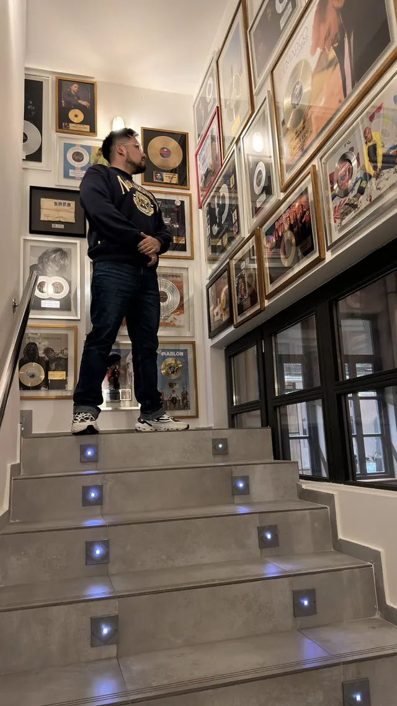
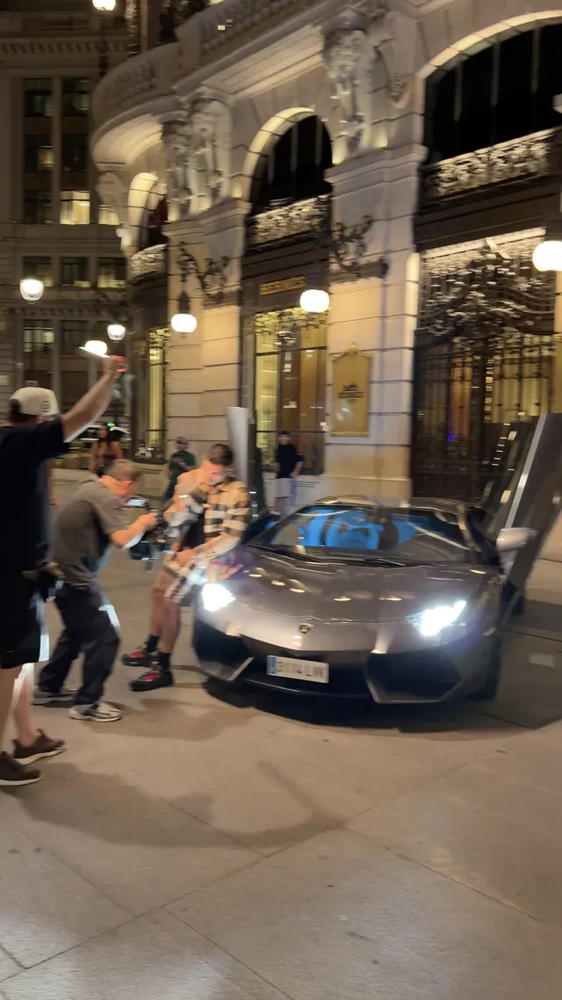
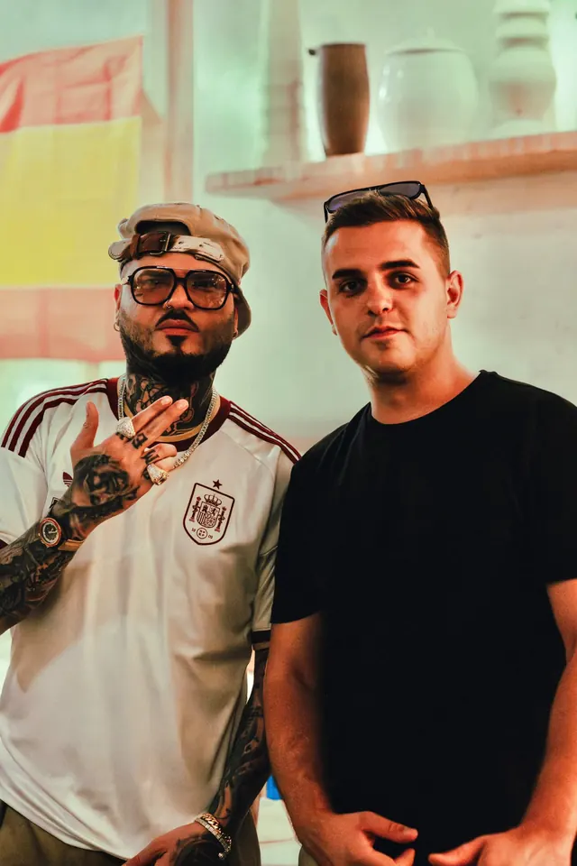

Mastermind presencial
Seremos más de 40 personas en PKO Studios, uno de los estudios más grandes y reconocidos de Madrid, en una jornada solo para artistas del DAP.
Music marketing real para artistas independientes. Sin bots, sin trucos. Hablas con una persona que escucha tu proyecto y diseña tu estrategia a medida — de la inclusión en playlists al plan de lanzamiento.
Solo 10 plazas nuevas este mes

 «Hey mami linda» · 10.156 personas escuchando a la vez
«Hey mami linda» · 10.156 personas escuchando a la vez «Hey mami linda» · #13 en el Top Songs de Costa Rica
«Hey mami linda» · #13 en el Top Songs de Costa Rica YouTube de Macuto Music · 10,6M visualizaciones en 28 días
YouTube de Macuto Music · 10,6M visualizaciones en 28 días TikTok · 1.940.606 visualizaciones en 7 días
TikTok · 1.940.606 visualizaciones en 7 días Discover Weekly · 117,8 mil streams
Discover Weekly · 117,8 mil streams Macuto Music · 1,51M reproducciones en 2024
Macuto Music · 1,51M reproducciones en 2024 «Se acabó» · Top 50: Colombia
«Se acabó» · Top 50: Colombia Release Radar · 14.250 reproducciones en 28 días
Release Radar · 14.250 reproducciones en 28 días TikTok · un vídeo con 11,5M de reproducciones
TikTok · un vídeo con 11,5M de reproducciones 761.995 oyentes en 12 meses
761.995 oyentes en 12 meses YouTube · 321.796 visualizaciones en 28 días
YouTube · 321.796 visualizaciones en 28 días «Vampiros en La Habana» · 142.584 reproducciones
«Vampiros en La Habana» · 142.584 reproducciones TikTok · 974.422 visualizaciones en 7 días
TikTok · 974.422 visualizaciones en 7 días YouTube de Macuto Music · 17,5M visualizaciones en 28 días
YouTube de Macuto Music · 17,5M visualizaciones en 28 días TikTok · 1.281.520 visualizaciones en 7 días
TikTok · 1.281.520 visualizaciones en 7 días Jorge, del equipo, con Farruko
Jorge, del equipo, con FarrukoLos números hablan por sí solos
Trabajando los géneros que dominan el Top 50 de los países hispanohablantes: reggaetón, trap, dembow, bachata, rap y pop latino.
Sabemos cómo funciona porque la vivimos como artistas. El artista va primero, siempre.
Acceso a Latinoamérica, Europa y Estados Unidos para hacer tu proyecto internacional.
Fundador de Macuto Music · artista y productor
Empezó como tú: artista independiente de música urbana, produciendo sus propios temas en Madrid.
Todo lo que aprendió para que su música llegara lo convirtió en el DAP, el Digital Artist Program: el método con el que hoy acompaña a otros artistas a dar el salto.
Músicos, para músicos.
Creemos en la música hecha en equipo: método, estudio y comunidad. Por eso reunimos a los artistas del DAP en la misma sala, para crear, aprender y crecer juntos.
Mastermind de Madrid · 19 de septiembre de 2026 · PKO Studios
Todo lo que necesitas para crecer de forma real y sostenible, en un solo equipo — sin humo y con datos.
Reuniones semanales con curadores reales para que tu música llegue al público correcto — nunca bots ni granjas de streams.
Estrenos de alto rendimiento centrados en construir comunidad alrededor de tu música.
Campañas en YouTube, TikTok y Meta optimizadas para tu nicho y tu presupuesto.
Desarrollo de tu imagen personal y tu marca dentro de la industria musical.
Crecimiento orgánico con gestión de contenido y desarrollo de comunidad.
Gestión de cuentas y catálogos de todos los tamaños. Analizamos tus estadísticas reales para decidir qué canción empujar, en qué país y con qué contenido.
Plazas limitadas: hablamos contigo antes de empezar para asegurar que somos el equipo adecuado para tu proyecto.
Nos cuentas quién eres, tu música y a dónde quieres llegar. Dos minutos.
Una persona del equipo escucha tu proyecto, resuelve tus dudas y valida el encaje.
Estrategia a medida para tu canción y tu objetivo. Transparente, sin sorpresas.
Ejecutamos y te acompañamos en cada lanzamiento. Orgánico, siempre.
Artistas independientes que crecen con estrategia, no con atajos.


Campañas activadas en proyectos con estos artistas · Oyentes mensuales en Spotify, julio 2026
Capturas reales de placements editoriales, entradas en charts oficiales de Spotify y crecimiento verificable.



No trabajamos la música latina desde un despacho: vamos donde se decide. Lo hecho y lo que viene, por fechas.
Seremos más de 40 personas en PKO Studios, uno de los estudios más grandes y reconocidos de Madrid, en una jornada solo para artistas del DAP.
Angelo Gutiérrez (Macuto), fundador de Macuto Music, estará siete días en Dinamarca. Europa también cuenta: trabajamos en Latam, Europa y USA.
Macuto asiste con pase VIP a NODE, el encuentro de Madrid donde coinciden productores, ingenieros, sellos y marcas de la industria musical. Vamos a por lo que no sale en el cartel: conversaciones que abran puertas a los artistas del DAP.
Macuto estará en la semana donde se cierra el negocio de la música latina: los encuentros, los paneles y las conversaciones que no pasan por email. Te contamos cómo funciona esa semana —y cuándo compensa ir— en nuestro análisis del RADAR.
Aprovechando el viaje, Macuto crea con los artistas del DAP que están en Miami. Trabajo real en sala, no una foto: es la parte del programa que no se puede hacer por videollamada.
Doce días en México para ver en persona a los artistas del DAP. Es uno de los mercados que más rápido se mueve en urbano latino, y hay proyectos que solo se entienden estando allí.
19 de septiembre de 2026 · PKO Studios. Una jornada solo para artistas del DAP: sesiones en la sala de control, grabación en cabina y trabajo con productores.


3 de octubre de 2026 · Madrid. Productores e ingenieros de sonido abren sesiones reales de mezcla y mastering. Macuto estuvo con pase VIP.


Madrid, ediciones de 2024, 2025 y 2026. Macuto y el equipo, en el encuentro de Forbes España con el talento joven, junto a otros invitados y fundadores.


Estudios, sellos, conciertos, rodajes y galas en Madrid y Miami: así se ve el día a día del equipo.












Envíanos una canción y la valoramos para nuestras playlists y campañas. Si encaja con lo que trabajamos, te contactamos nosotros. Sin coste.
Por aplicación. Rellenas un formulario rápido, hablas con una persona del equipo que conoce tu proyecto y, si encajamos, diseñamos tu estrategia. Trabajamos con un número limitado de artistas para cuidar cada campaña.
Cada proyecto es único: trabajamos campañas desde 300 € hasta 28.000 €, según el alcance y el objetivo. En la conversación inicial definimos juntos la estrategia que mejor encaja contigo — sin compromiso y con total transparencia.
Nunca. Vender streams va contra las políticas de Spotify y puede dañar tu perfil. Trabajamos solo crecimiento real y orgánico: conectamos tu música con curadores y audiencias reales.
Sí. Todo lo que hacemos respeta las reglas de las plataformas. Tu perfil no corre ningún riesgo.
Los que dominan el Top 50 de los países hispanohablantes: reggaetón, trap, pop latino, dembow, bachata, rap, música urbana y latina en general.
Sí. Tenemos presencia y acceso en Latinoamérica, Europa y Estados Unidos para ayudarte a crecer internacionalmente.
No repetimos noticias: analizamos qué significan para tu proyecto. Con fuentes, criterio y una jugada concreta cada semana.
 Industria
Industria
El 97% no distingue una canción hecha con IA de una humana. Pero cuando les dicen cuál es cuál, todo cambia: el riesgo no es usar IA, es parecerlo.
 Industria
Industria
El modelo pro-rata, el umbral de los 1.000 streams, el mapa de derechos en España y siete acciones concretas para que tu catálogo genere lo que le corresponde.
 Plataformas
Plataformas
No compiten entre sí: funcionan con lógicas distintas y sirven para momentos distintos de una carrera. Lo que necesitas saber para no desperdiciar ninguna.
Solicita tu plaza y habla hoy con el equipo. Sin compromiso, 100% transparente.
Quedan 10 plazas este mes